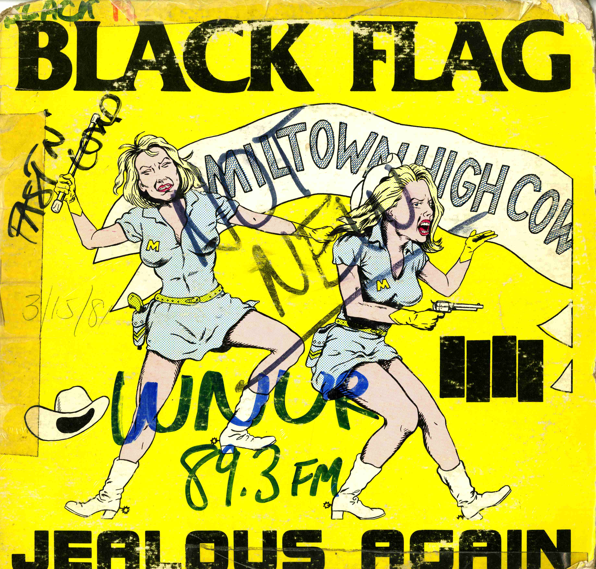

A few years back Apple announced its new music streaming platform, Apple Music. In a press release announcing the product the company stated: “Apple has hired the most talented music experts from around the world, dedicated to creating the perfect playlists based on your preferences, and they become better curators the more you listen.” “Hmmm,” I thought, “curated by real live humans? So like...radio?” I was astounded, Apple, big bad Apple, is offering a revolution against algorithmically chosen and generated music by offering humans! Of course, the intention of Apple is much the same as the algorithm by creating playlists to allow people the comfort of staying within their musical comfort zones. But, regardless of their intentions, Apple acknowledged something special about one human showing another human music that, even in the current era of internet radio and streaming, maintains worth. In the case of non-commercial radio, something even more special happens when that sharing becomes detached from corporate music business interest. How about when you let a bunch of 18-21 year-olds run the whole thing with total freedom? Magic. This document is the story of that magical thing transmitting to the receivers, whether their owners knew it or not, of over 3 million people in the Chicago-land area from 1980 on. This is the story of WNUR Rock Show.
WNUR is a student-run radio station housed at Northwestern University in Evanston, IL. Broadcasting at 89.3 on the FM dial, the station reaches nearly 3 million people on a day to day basis in the Chicago-land area and has been broadcasting since 1950. In its current iteration, WNUR’s mission is to play “underrepresented” music in a hybrid programming format that includes both freeform and genre-specific radio blocks, among these blocks are The Jazz Show, Streetbeat (late-night hip-hop and dance), Continental Drift and The Rock Show. This document is a story of The Rock Show from its beginnings in the early 1980s to now and an exploration of the ways underground rock music changed college radio forever and paved the routes for other genres and musical movements to do the same.

You are listening to Bob Orlowsky on WNUR 7/2/1983
College radio remains one of the only alternatives
to the commercial radio complex dominated by large corporate entities like ClearChannel and iHeartRadio. Commercial radio stations primarily do the bidding of similarly structured, large, corporate record labels by playing automated lists of 20-40 songs on somewhat randomized loops with little input from the DJs who mainly become voices and personalities. By resisting corporate interest (including underwriting) college radio creates a freedom on the airwaves worth preserving and fighting for that has the power to reach anyone with a receiver in listening range. Beyond providing a voice and outlet for students, WNUR and most other college radio stations distribute their air time to community members un-affiliated with the university. Knowing this, when we talk about college radio, we are really talking about community radio.1
Even with the internet more centrally positioned in many of our lives, community radio still provides a unique place for discovery and amplification. As I alluded earlier, one of the many social impacts of the internet is the way media often becomes personalized for the user, making true discovery and experience of tastes and views beyond your own an effortful task. Community radio, especially college radio stations with a commitment to playing a wide variety of underrepresented music, cut through these echo chambers of internet music and create connections and lines between disparate sounds and sources. Meditating on the community aspect, college radio stations make connections across generational divides between students and the commonly staffed older, community DJs whose audiences come to the same place to hear varying shows oscillating between gospel, noise rock, house and beyond. In this bleed between programs, where a fan of a particular show might leave drift off with the dial in place, is the beauty and joy of discovering music on independent, commercial-free radio. At the same time, in a more terrestrial way, these stations, interface and connect with local communities of artists, business owners and fans to create and support real local sustainabilities with lasting impacts. Regardless of the reasons, community radio persists and matters as something folks on both sides of the microphone support and care about
1 Especially considering that the majority of listeners and often financial supporters come from outside the university housing. In the case of WNUR, the station’s operating budget (excepting housing, license fees, electricity costs and station maintenance) comes from listener donations. In turn, many of the events WNUR puts on are in and for the community.
I am, in many ways a part of this story.
From 2014 to 2017, WNUR was my main classroom at Northwestern. My transcript says I was pursuing a bachelor’s degree in music, but my friends could probably tell you that was a farce – radio was pretty much all I cared about. At WNUR I was learning how to record and mix live performances directly to radio, interfacing with the Chicago music scene and managing a team of people on a live performance show called “Airplay” before I was old enough to get into most clubs in the city. In the socially daunting first year of college, my two friends and I holed up in the station studio for the entirety of most Saturdays recording local and touring bands. At the same time, I was holding down 3-4 shows a quarter on the station and spending hours in the legendary “stacks” listening to records prepping for my next rock or jazz show. My third year, I was honored to serve as the general manager of the station and learned more about leadership and making radio, or anything for that matter, happen than I could have at any internship or class.
Throughout this time, I heard and read anecdotes about the station’s past, perhaps most notably on the covers of the records and CDs in the collection. During the summer after my third year, I got a grant to digitally archive the covers of these records and thus started a project and process that leads directly to this document you hold in your hands. The digital archive lives on at www.undergroundarchiveproject.org and the knowledge from the notes on WNUR’s record covers has been extended by interviews and help with a variety of alumni. This collection of knowledge would not be possible without the support of: past WNUR’ers Bob Orlowsky, Irene Innes, Doug Conn, Scott Byron, Glen Sarvady, Steve Jarvis, Mike Lev, Dan Osborn, Octavia Kincaid, Jason Cohen, Joel Penney, Kevan Harris, Todd Hyman, Peter Schaffer and John Kezdy; Karen Yamashita and the social documentary workshop at UC Santa Cruz; I would like to thank Michael Kramer for his initial and sustained support of the project at Northwestern University and beyond. And lastly, all my friends and family who have had to entertain my incessant ramblings about WNUR past and present over the past 6 years.
I see this document as a microhistory of a college radio station in the era of college radio’s peak of power and importance in cultural/music history.
WNUR, because of its location and wide (relative to other college stations) reach was a critical player in what would become a nationwide network of college radio stations supporting a network of artists, labels, zine-makers, venues and record stores in the burgeoning American indie underground. This nationwide scene, documented well by Michael Azzerad in his book Our Band Could Be Your Life, was lead by popular hardcore punk groups like Black Flag, Minor Threat and Bad Brains along with post-hardcore/noise groups like Big Black, Hüsker Dü and Mintemen. These bands represent the top layer of a culmination of local scenes and underground, non-corporate musical activity unprecedented in America at the time and perhaps since, that college radio stations played a major role in developing and maintaining. While college radio played a major role in the nationwide ascendance of independent music in America, I hope this history adds a community-oriented perspective to the popular historical notion of college radio as well as offering a model for counter-cultural institution building.

This document focuses on the years at WNUR following 1980, specifically within WNUR’s Rock Show. While, the 30 years leading up to 1980 has been documented in the University Archives and by a group of NUR alumni, the period after 1980 exists only as an anecdotal history, passed down in a game of telephone over the many years. My writing and collecting attempts to be a part of that hidden history by bringing together the personal histories of many into a history of the whole. While I have tried to be as complete as possible in constructing a version of what happened between 1980 and now at WNUR, I acknowledge that it is only a version of the many that marks the individual experience of all those whose lives have been touched by the station. This version is obviously limited by the accounts of those I dedicated my free time to talk to. Fittingly, I think, this document is a reflection of the labor of thankless love that college radio is built on, and if I missed your story know it was not because I don’t care, but rather that at some point I burned out on collecting and felt the impulse to write it all down.
In short, for three and a half years WNUR was my life. By the time of my graduation I only really knew two people who were not involved at the station and now have only maintained my WNUR relationships. I’ll often find myself wearing a WNUR t-shirt and hat, and yes, the tattoo on my inner bicep is a station tattoo (I lost a bet). This fanatical and dedicated experience, while maybe not the current college radio norm, is not unique through history as I continually find kin in the many others who dedicated even more of their time to WNUR before me. There is no fame or glory in community radio, only blood, sweat and tears of folks fighting for a freedom of speech and representation they desperately believe in. That college radio attracted and empowered a devoted following without traditional forms of coercion or social pressure that you see throughout most other traditional college institutions (frats, sororities, student production companies etc.) is in part why I think it matters and perhaps why its importance has slipped unnoticed on the radar of the larger university institutions. Because of this, the story of WNUR has gone largely untold and uncollected outside of the uninspired university archives holdings and the individual, four-year memory pools of past WNURers. At a certain point I realized, because of my work on the digital archive, position within the organization and curiosity, I held the critical mass of history to the point of burden – if I don’t tell this story, who will?